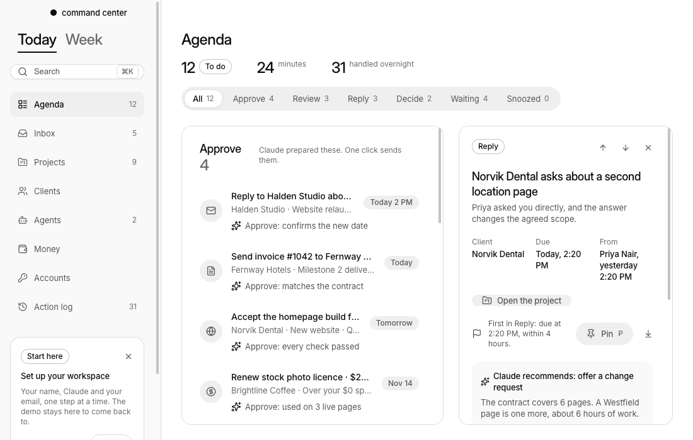
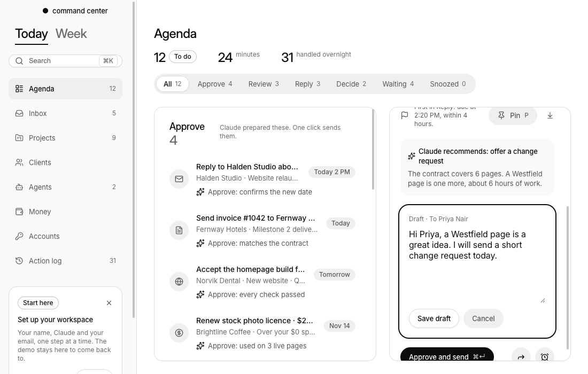
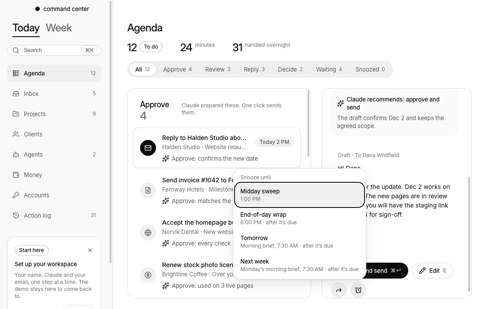
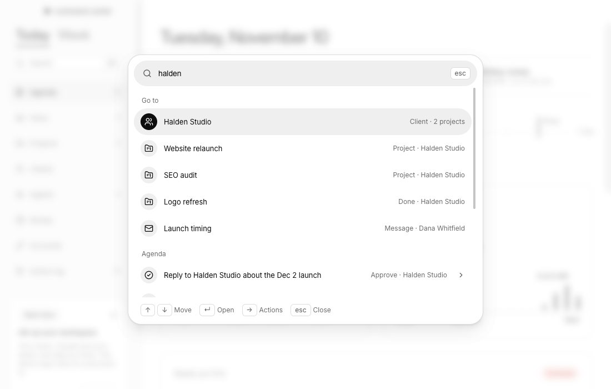
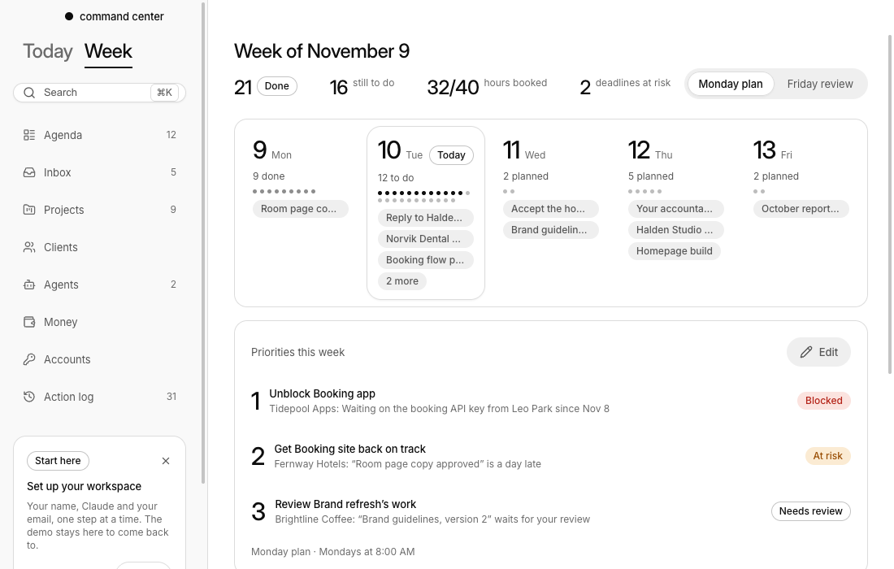
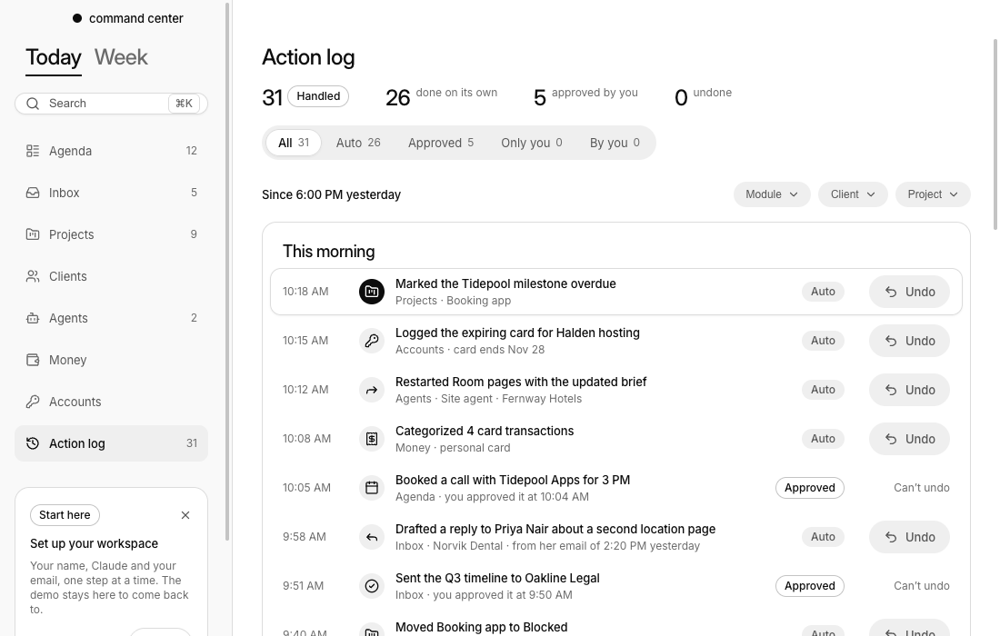

Today and the agenda
Today tells you how your day stands at a glance. The agenda is where you clear what needs you, by mouse or keyboard.
Today

Across the top: how many things are to do and about how long they'll take, what Claude handled overnight (undo any of them from the log), and when the next touchpoint is. Its mark breathes slowly while you wait.
Below it, the day's timeline from 7 AM to 7 PM with the brief, sweep and wrap marked, Time to clear by kind, Handled by Claude hour by hour, Needs you first, and the newest brief. When nothing's left, Today shows All clear.
The agenda
Everything that needs you, in four groups, in the order that matters: what's due soonest and what's at stake come first. Each item says why it's where it is.
| Group | What's in it |
|---|---|
| Approve | A reply, invoice or other action Claude prepared. It runs only on your click. |
| Review | Work a site agent finished and QA checked. |
| Reply | A message that needs your answer, often with Claude's draft. |
| Decide | Something only you can choose: a slipping milestone, a bill, a flagged charge, a card running out. |
The filters along the top also show what's Waiting on someone else and what you've Snoozed.

An item
Open an item to see who it's for, when it's due and where it came from, why it's first, Claude's recommendation (or the engine's, for a slip or a status), and exactly what would go out. Its main button does the one thing it's for: Approve and send, Accept and merge, Move to Nov 24, Mark paid.
- Edit changes the draft before it goes. What you see is what's sent.
- Snooze puts it away until a touchpoint or a day you pick.
- Pin keeps it at the top of its group; Push down sends it lower.
- Delegate hands work to an agent.
- Take back returns something you delegated or marked waiting.


Keys
| Key | What it does |
|---|---|
| ⌘ Enter on a Mac, Ctrl Enter on Windows | The main button |
| E | Edit |
| D | Delegate |
| S | Snooze |
| P | Pin |
| ↑ ↓ | Move between items |
| Esc | Close |
The command bar
⌘ K on a Mac, Ctrl K on Windows. Type to find any client, project, item or setting. With nothing typed it lists what's to do and quick actions: snooze, pin, take back, undo, pause the touchpoints, sync now. It never approves or sends: an item opens, so your click lands on its card.

The week
The Week view shows each weekday's done, planned and due, your priorities, and your capacity: hours booked against the week. On Monday morning the engine suggests three priorities from what's at risk and due; Edit changes them and your booked hours. On Friday afternoon the review sums up revenue, receivables, project health and agents' first-time QA passes.

The action log
Everything Claude, the engine and you did, by day, with who did it and why. Filter by client or by who acted, page back through days, and choose Undo where a change can be undone. A line opens what it was about.
